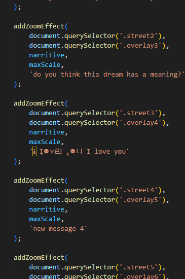
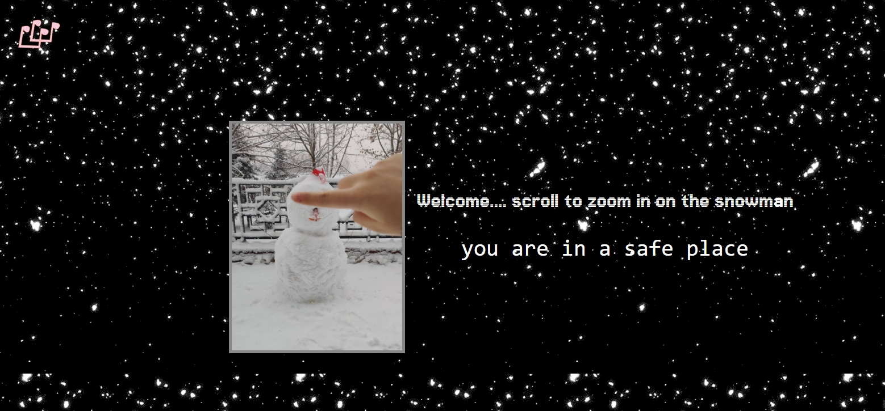
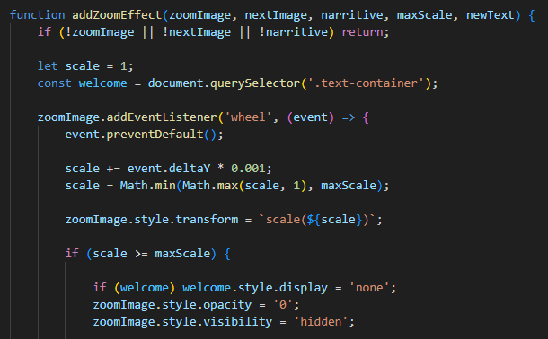

Design Changes and Evolution
Final Project Expert Review & Report
Reviewer: professor and TA
Enhanced Visual Hierarchy The final project demonstrates a more effective use of visual hierarchy. Typography has been refined to guide the user's eye more intuitively, employing clear headings, subheadings, and body text differentiation. The studio project’s text lacked contrast and emphasis, occasionally leading to a cluttered or overwhelming appearance.
Color Scheme and Imagery The final project employs a cohesive color palette and imagery that align with the project's theme, creating a more engaging and memorable experience. Studio Project: The color scheme and imagery lacked harmony and sometimes distracted from the content. Final Project: Thoughtful integration of complementary colors and relevant visuals strengthens the overall design.
Functionality and Interaction Design Changes
Improved Navigation The navigation system in the final project has been refined to enhance usability. Clear, consistent menu items and interactive feedback mechanisms (such as hover effects) improve the user experience.
Summary
The evolution of design and functionality from the studio project to the final project has significantly increased its impact. The final project is more user-friendly, visually appealing, and accessible, providing a polished and professional experience. By addressing design inconsistencies, improving navigation, and enhancing responsiveness, the final project exemplifies a thoughtful approach to web design.